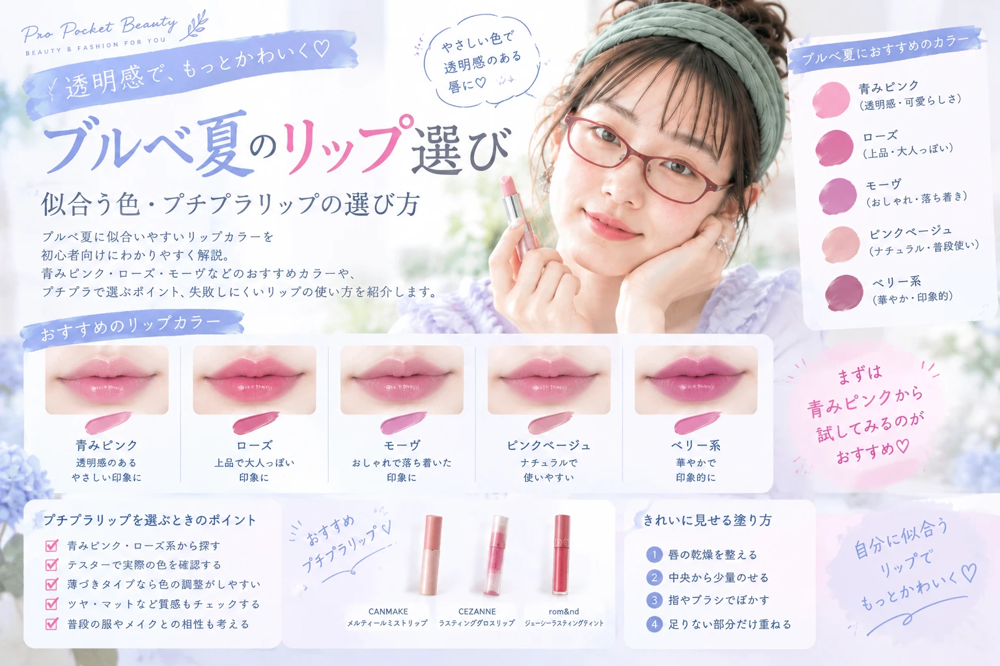

ブルベ夏のリップ選び｜似合う色・プチプラリップの選び方
ブルベ夏に似合いやすいリップカラーを初心者向けにわかりやすく解説。 青みピンク・ローズ・モーヴなど、自然に顔色を明るく見せやすい色の選び方を紹介します。

ブルベ夏に似合うリップとは？
ブルベ夏は、肌に透明感があり、やわらかく涼しげな印象を持つカラーが似合いやすいタイプです。
リップも、黄みの強いカラーより 青みを感じるピンクやローズ系を選ぶと、顔全体が自然にまとまりやすくなります。
「ブルベだから濃い青みカラー」と考えすぎなくてもOK。 普段使いなら、淡いピンクやローズ系から始めると失敗しにくいです。
ブルベ夏におすすめのリップカラー
初心者が選びやすいカラーは、次のような色です。
| カラー | 印象 | おすすめ度 |
|---|---|---|
| 青みピンク | 透明感・可愛らしさ | ★★★★★ |
| ローズ | 上品・大人っぽい | ★★★★★ |
| モーヴ | 落ち着き・おしゃれ | ★★★★☆ |
| ピンクベージュ | ナチュラル・普段使い | ★★★★☆ |
| ベリー系 | 華やか・印象的 | ★★★☆☆ |
初心者なら青みピンクから始めるのがおすすめ
ブルベ夏のリップ選びで迷ったら、まずは 淡い青みピンクをチェックしてみましょう。
明るすぎず、少しくすみ感のあるピンクなら、日常のメイクにも取り入れやすくなります。
- 自然な血色感を出しやすい
- ナチュラルメイクと合わせやすい
- 学校・仕事・休日にも使いやすい
- 濃さを調整しやすい
大人っぽく見せたいならローズ系
可愛いだけではなく、少し大人っぽい雰囲気にしたいときはローズ系がおすすめです。
ローズは赤とピンクの中間のような色で、唇に自然な存在感を出しやすいのが特徴。 アイメイクを控えめにして、リップをポイントにするのもおすすめです。
デート、学校行事、友達とのお出かけなど、少しきちんと見せたい日に使いやすいカラーです。
モーヴ系ならおしゃれな雰囲気に
モーヴ系は、ピンクに少しくすみ感や紫っぽさを加えたようなカラー。 ブルベ夏の落ち着いた雰囲気と相性がよく、おしゃれな印象を作りやすいカラーです。
「いつものピンクでは少し物足りない」という人にもおすすめ。 ただし、濃すぎるモーヴは顔色が暗く見える場合があるため、最初は薄づきタイプから試してみましょう。
プチプラリップを選ぶときのポイント
高価なリップを買わなくても、自分に似合う色を見つけることはできます。 少ない予算で試したいなら、プチプラから始めるのもおすすめです。
- 青みピンク・ローズ系から探す
- テスターがあれば実際に色を確認する
- 薄づきタイプなら色の調整がしやすい
- ツヤ・マットなど質感もチェックする
- 普段使う服やメイクとの相性も考える
「ブルベ夏向け」と書いてある商品でも、実際の発色は商品によって異なります。 可能なら唇に近い場所で色を確認して選びましょう。
似合うリップをきれいに見せる塗り方
リップカラーだけでなく、塗り方を変えるだけでも印象は大きく変わります。
- 唇の乾燥を整える
- リップを中央から少量のせる
- 指やブラシで輪郭を軽くぼかす
- 足りない部分だけ重ねる
ナチュラルに仕上げたい場合は、一度にたくさん塗らず、 少量ずつ重ねるのがポイントです。
ブルベ夏でも避けなくていい色
「ブルベ夏だからこの色は絶対NG」という考え方をする必要はありません。
オレンジやコーラルなどの暖色系も、色の明るさや質感、他のメイクとの組み合わせによって楽しめます。
似合う色を基本にしながら、 自分が好きな色も自由に取り入れることがメイクを楽しむコツです。
パーソナルカラーは「使える色を制限するもの」ではなく、 自分に似合いやすい色を見つけるためのヒントとして活用しましょう。
ブルベ夏のリップ選びまとめ
- 初心者は青みピンクから始めると選びやすい
- 上品に見せたいならローズ系がおすすめ
- おしゃれに見せたいならモーヴ系もおすすめ
- プチプラでも似合う色を見つけられる
- 薄づきタイプなら濃さを調整しやすい
- 好きな色も工夫しながら楽しんでOK
少ない予算でも、自分に似合うリップを見つければメイクの印象は大きく変わります。 まずは使いやすい青みピンクやローズ系から、自分のお気に入りを探してみてください。